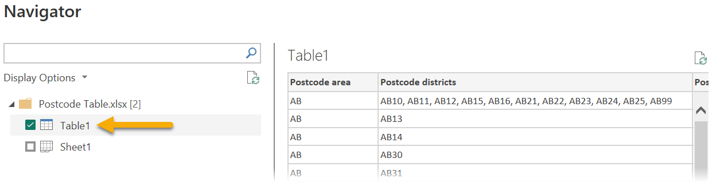
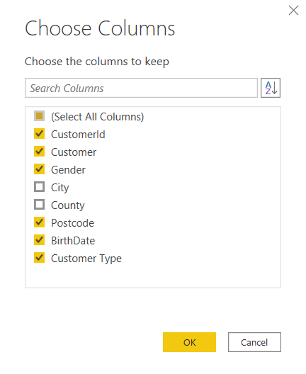
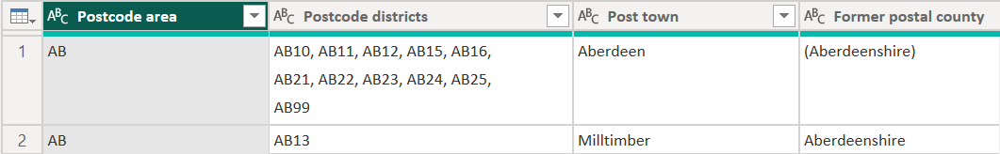
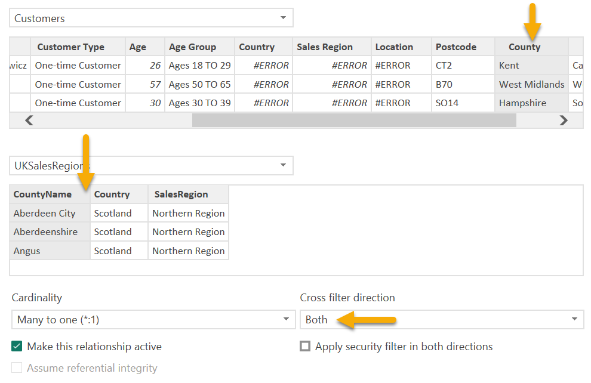

- Select Table1

- Next click Load
- Next, to make use of this new table we need to tidy it up using Power Query Editor once more, so
click on the Home tab, then choose Transform data
- Select Customers query, then in the Home tab
ribbon click on Choose Columns and untick City and County then click OK

- Next, select the Table1 table from the Queries
pane
- In the Query Settings pane, change the name of the query from Table1 to UK Postcodes

- We can see that some counties have more than one postcode district as shown below

- To create new rows for the grouped postcodes that are split by a comma, select the Postcode districts column, then in the Home tab of the ribbon, choose
Split Column then By Delimiter
(if you don’t have column headings, for example you see Column2 instead
of Postcode districts, in the Home tab of the ribbon click on Use First
Row as Headers in the Transform category)

- Choose to split by Comma, then expand Advanced
options and choosing to split into Rows
- Click OK to split out the grouped postcodes
- To get rid of the return carriages, with the Postcode districts column
selected, in the Transform tab in the ribbon then choose Format then
Trim

- Next, there are some repeated postcodes so right click on the Postcode districts column and choose Remove Duplicates
- One other thing to clean up are the brackets around some counties e.g. (Aberdeenshire) so select the Former postal county column
- In the Transform tab of the ribbon, select Replace
Values from Any Column category
- Replace ( with nothing and click OK
- Repeat step 17 and replace ) with nothing and click OK
- Our UK Postcodes data is tidy, now we will get our postcodes in our customers table to match the
postal districts in our UK Postcodes table, click on the Customers table in the Queries pane
- Select the Postcode column and choose Split
Column in the Transform tab of the ribbon, then choose By
Delimiter
- Leave the selection as Space and click OK
- Right click on Postcode.2 and choose Remove
- Right click on Postcode.1 and rename it to Postcode
- The queries are now ready, sadly because there was not a relationship between this data when we
added it, we cannot use the expand button to bring related columns from the UK Postcode table into the customer
table
- In the Home tab, click on Close & Apply
- Back in Power BI Desktop, click on the Model
 view in the rail menu
view in the rail menu
- Notice the UK Postcodes data is not related to our customer postcode data, click on Manage relationships in the Home tab of the ribbon
- Click Autodetect… but notice it cannot find a relationship, nice work
Power BI, let us step in and help you out here…
- Instead click Close then click New…
- Configure the relationship as follows:
Please note
that you need to choose the Customers and UK Postcodes tables, then
click and select the Postcode column in the Customers table then the
Postcode districts column in the UK Postcodes table, the columns
turn grey
Set your cross directional filter to Both and check the cardinality is Many to one (*:1)

- Click OK to create the relationship, then click Close on the Manage relationships window
- Now we need to take the useful columns from the UK Postcodes table and bring them into the
Customers table which we could not do in Power Query, so we will use a different method, click on Data in the rail menu (do
not worry about the errors relating to missing columns, we will resolve this)
- In the Customers table choose New column from the
Home tab of the ribbon
- Enter the following formula County = RELATED('UK Postcodes'[Former postal
county])
- Again, in the Customers table choose New column
from the Home tab of the ribbon
- Enter the following formula City = RELATED('UK Postcodes'[Post
town])
- The counties and cities will be added to your customer data and it is accurate based on the
postcodes provided by the customer, sometimes you need to do a lot of work to correct errors in data

- Next, click on the Model view in the rail menu
- The relationship between the UKSalesRegions table and the Customers table also needs recreating,
click Manage relationships in the Home tab of the ribbon
- Click New…
- Configure the relationship as follows:
Please note
that you need to choose the Customers and UKSalesRegions tables,
then click and select the County column in the Customers table then
the CountyName column in the UKSalesRegions table, the columns turn
grey
Set your cross directional filter to Both
and check the cardinality is Many to one (*:1)
See a preview of this configuration on the following page

- Click OK and then click Close
- In the rail menu, click on Report
 view
view
- Select the Sales by Region page, the map has updated with the new
regions, use the slicer to explore the regions, there should not be any more anomalies, e.g. London being included
in the northern region
It is important that your information is as accurate as possible to provide your
audience with real insights. With inaccurate data, stakeholders in your report may make ill informed decisions.